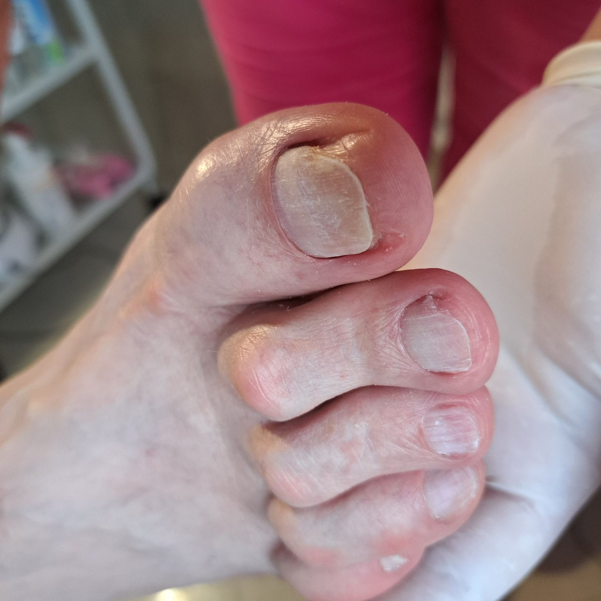

karta 1 z 7
Wrastający paznokieć
Najczęściej duży palec u stopy
- Co to jest
- Brzeg płytki paznokcia wrasta w otaczającą go skórę. Zwykle pojawia się zaczerwienienie, obrzęk i ból przy chodzeniu w butach.
- Co robimy u nas
- Delikatnie usuwamy wrastający fragment i zakładamy opatrunek. Gdy problem wraca, proponujemy klamrę ortonyksyjną, która stopniowo koryguje kształt płytki.
- Wycięcie wrastającego paznokcia z opatrunkiem120 zł
- Korekta klamrą ortonyksyjną150 zł
- Przełożenie klamry, kolejna wizyta120 zł

Jak zawsze wszystko super.